This section explains the installation of Ticketing Expert (SaaS). The Multitenant application
Can we installed uisng a control panel like cPanel or uisng terminal. It;s good to use a dedicated server
or VPS for this application if you are planning to allow a large number of tenants in the system.
Also this documeht explains the installation of the app in a sub domain.
But you can install it using a main domain and can create wild card domains for tenants.
This application create one database per tenant. So make sure that
the database user has the privileges to create a new database.
MySQL command to be executed is given in below installation step.
2. Installation Using cPanel
Note: This installation of Ticketing Expert using cPanel explains the installation
of the app in a central domain: mz.statuskart.com and wild card domain is *.mz.statuskart.com
So the landlord can login at mz.statuskart.com as admin and tennats can login
at tenant1.mz.statuskart.com, tenant2.mz.statuskart.com etc as admin.
Step 1: Selection of domain
First login to cPanel and you will see options as shown below.
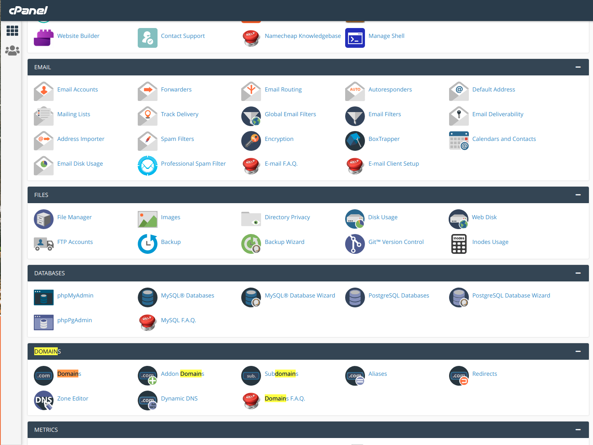
Fig.2.1 Domain Setup - Step-1
You can install this app using any domain or subdomain.
You just have to select the domain if it’s already there or create a subdomain.
In both cases the document root should be like
<somepath>/public
In our example installation domain is http://statuskart.com
and document root is /home/kycdyuvx/statuskart.com/public
Note that the public should be at the end of the document root
/home/kycdyuvx/statuskart.com/public
If you are installing under a subdomain, click on the subdomains link.(see the below image)
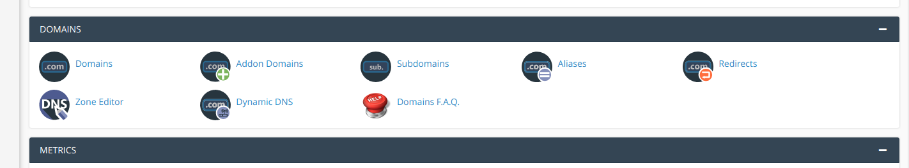
Fig.2.2 Domain Setup - Step-2
That will show a new window as shown below,
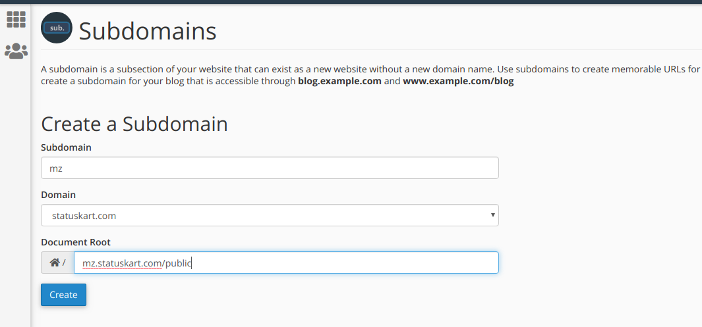
Fig.2.3 Domain Setup - Step-3
There you can enter the subdomain name. You have to select the domain and should enter the
document root.
The /public at the end of the document root is required as in the picture.
If you are going to use an existing domain, click on the domains link in Fig.2.2
That will show a list of domains as shown below.
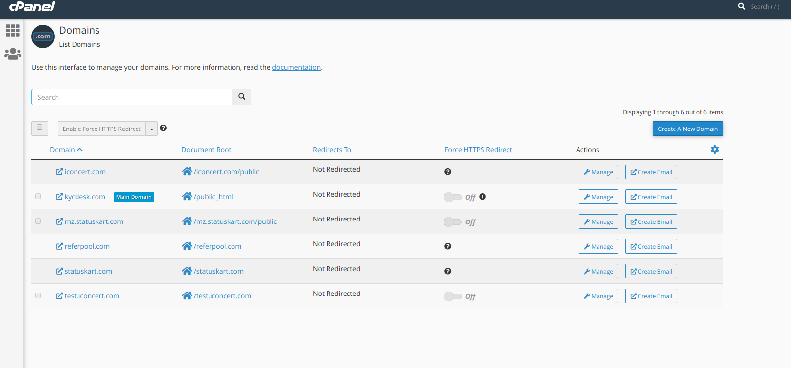
Fig.2.4 Domain Setup - Step-4
Then click manage button of the domain that you wish to choose. That will show a window as
shown below.
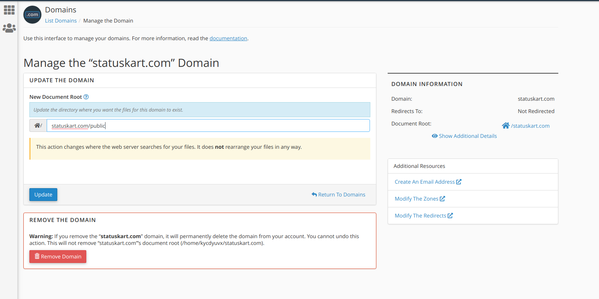
Fig.2.5 Domain Setup - Step-5
Here you can edit your document root under "New Document Root" section.
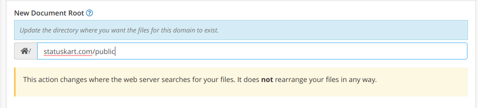
Fig.2.6 Domain Setup - Step-6
Make sure that the document root ends with /public. Then you can save the changes
using update button.
Create a wildcard subdomain.
We also have to create a wildcard subdomain for the tenants.
The wild card subdomains too must be pointed to the same document root as that
of the central app.
Also make sure that A record is added for your subdomain and wildcard subdomain.
Step 2: Upload files
The next step is uploading the files to the server.
Hope you already know the FTP details of your server and document root.
Once you extracted the code you purchased, it’s folder structure will be as shown below.
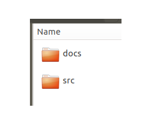
Fig.2.7 Upload files - Step-1
Now open the src folder from the extracted file. It contains the files and folders as shown
below
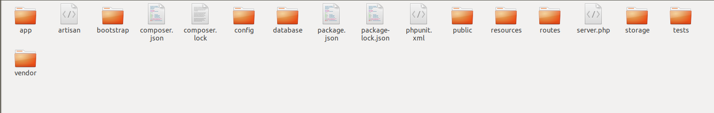
Fig.2.8 Upload files - Step-2
We need to upload those files to the server using FTP.
After connecting to the FTP server, You will see the files in src folder on the left hand
side of the window
and the server folder on the right hand side of the window.
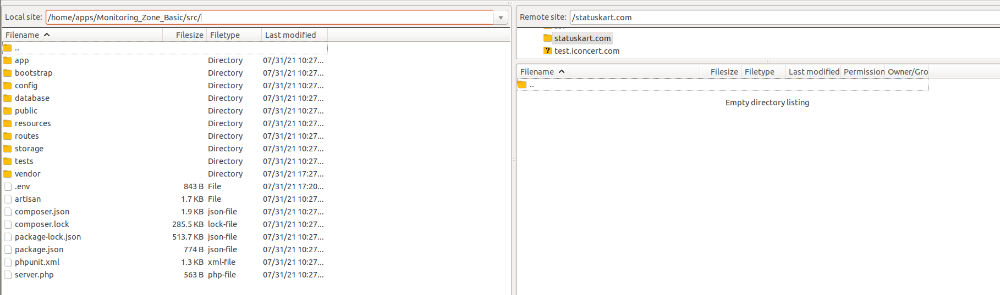
Fig.2.9 Upload files - Step-3
One important point is that, even though our document root is
/home/kycdyuvx/statuskart.com/public,
we are not going to upload the files to /home/kycdyuvx/statuskart.com/public folder,
but we are uploading the files to /home/kycdyuvx/statuskart.com/ folder
After all the files are uploaded, the window will looks like the picture below.
This application create one database per tenant. So make sure that
the database user has the privileges to create a new database.
It can be given by running
Grant all privileges on *.* to 'kycdyuvx_mz'@'localhost';
Replace kycdyuvx_mz with the username of your database.
After these steps are completed, take the domain URL. It will be redirected to the
installation page.
Step 5: Install IMAP Extension
In order to work Email piping, php imap extension should be installed.
You can refer the below link to install php imap extension using cPanel.
Refer : Install
php imap extension using cPanel
Step 6: Installation using installer
Now you have to install the Ticketing Expert using the installer. For that take the domain
URL and it will be redirected to a page as shown below.
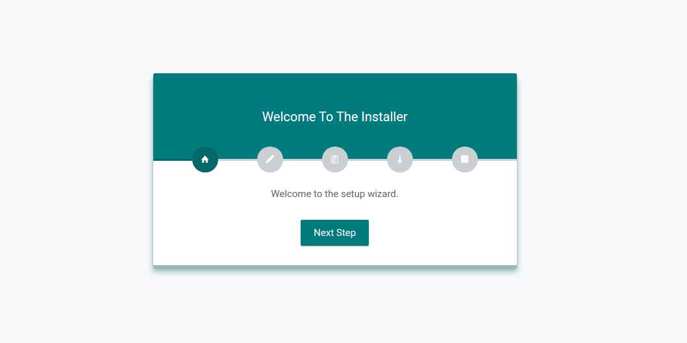
Fig.2.17 Installer
In the next step, you need to provide the database details as below.
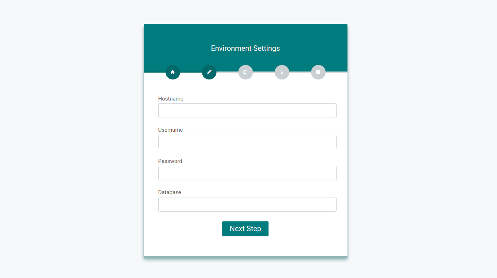
Fig.2.18 Database details
After filling the correct db details, It will be redirected to requirement checking page in
the next step as shown below. If there any requirement is left, you have to install it.
Fig.2.19 Requirements check
After checking the requirements, you have to provide the right permissions in the next step.
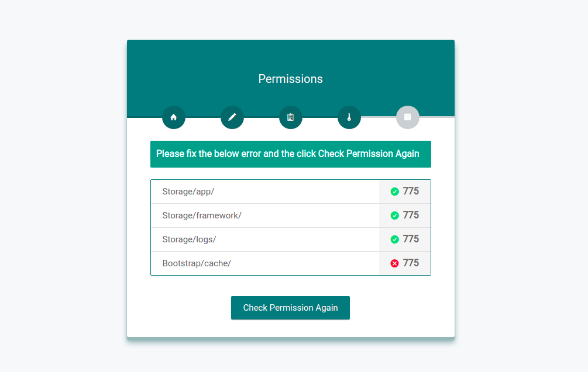
Fig.2.20 Permission check
If you are using cPanel installation, for providing missing right permissions, select the
corresponding folders as shown below.
Otherwise run the following commands from your root folder. chmod -R 777 storage/* chmod -R 777 bootstrap/cache
For cPanel installation:
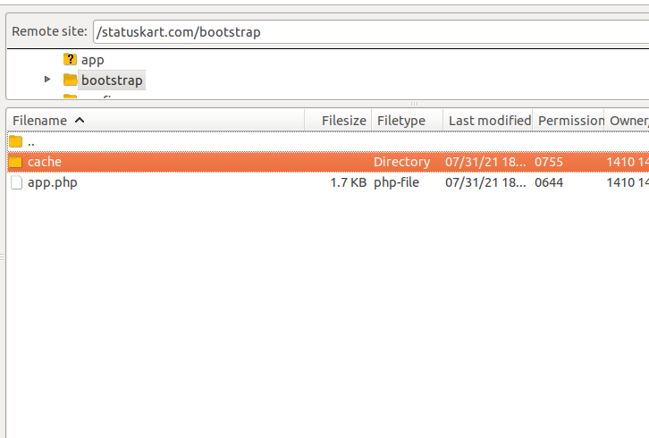
Fig.2.21 Permission setup for bootstrap/cache folder
After that, give 775 permissions for all required folders. Then proceed with the
installation.
Now you need to setup the cron for importing latest emails to the Ticketing expert. For that
take the "Cron jobs" from cPanel.
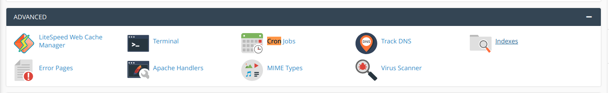
Fig.2.23 Cron setup - Step-1
Then click an add new cron button. On the displayed window, From "Common Settings", select
"Once Per Five Minutes" and fill other fields as shown below.
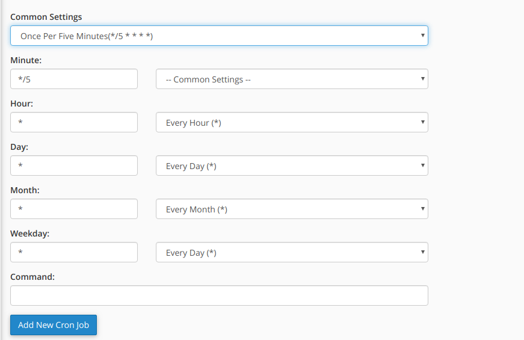
Fig.2.24 Cron setup - Step-2
Our command to add to the cron is /usr/local/bin/php/home/kycdyuvx/statuskart.com/artisan schedule:run >> /dev/null
2>&1"
/home/kycdyuvx/statuskart.com/ is the path to the application
So add /usr/local/bin/php/home/kycdyuvx/statuskart.com/artisan schedule:run >>
/dev/null 2>&1" as the command.
Then you will see
We also have to add one more commnad to the cron, it's required to process the queue jobs.
*/1 * * * * cd /usr/local/bin/php/home/kycdyuvx/statuskart.com && php
artisan queue:work database --stop-when-empty
That’s all, Enjoy.
3. Installation Using Terminal
Note: This document explains the installation of Ticketing Expert on a subdomain
tesaas.modulespanel.com. So, you have to replace tesaas.modulespanel.com mentioned in
each installation steps with your subdomain.
In each step, we have marked the tesaas.modulespanel.com subdomain in red color. So,
you have to replace tesaas.modulespanel.com in red color with your subdomain.
Step 1: Document root set-up
It’s better to install the Laravel app on a web server. You can create a sub domain for
this.
Eg: tesaas.modulespanel.com Then you have to set up a
document root for this domain.
Document root should be something like /var/www/tesaas.modulespanel.com/public/
If you are using apache2, you have to create a virtual host for that. For that you have
to
create a file like
/etc/apache2/sites-available/tesaas.modulespanel.com.conf.
Content within your Virtual-Host tag of the page will be something like
Then enable the subdomain using the below command. a2ensite tesaas.modulespanel.com.conf sudo /etc/init.d/apache2 restart
Also add A record for your domain and also for wildcard domain
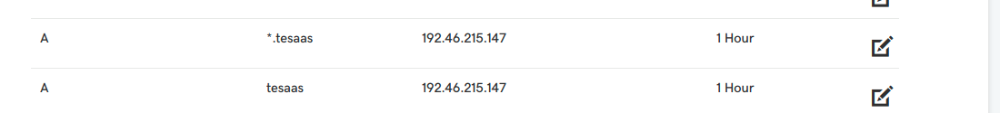
Step 3: Unzip your files
Then you have to unzip the project file you purchased. There will be two folders named as
src and docs. First you have to upload the files in src folder
to
the folder, /var/www/tesaas.modulespanel.com.
Once you uploaded the files, make sure that you have folders like
/var/www/tesaas.modulespanel.com/app/
/var/www/tesaas.modulespanel.com/database/
/var/www/tesaas.modulespanel.com/public/
Step 4: Install php-imap
Linux installation.
We need php-imap for importing tickets from email. You can install it using the
below command. sudo apt-get install php-imap sudo phpenmod imap
Then restart your webserver.
Windows installation.
You need to configure your php.ini file to enable IMAP extension.
To locate the php.ini file path refer link : Locate
php.ini
Search for the line ;extension=php_imap.dll and remove semicolon( ; ).
The line should look like as mentioned below. extension=php_imap.dll
Then restart your webserver.
Mac OS installation.
First of all, make sure that you have installed brew on your system. If not, please
install brew by
referring the link : Install
and Use Homebrew on macOS
Now you can install php-imap using the below commands on Mac OS. brew tap kabel/php-ext brew install php-imap
Then restart your webserver.
For more details : IMAP Mac OS installation
Step 5: Permission settings
In order to change the permissions, run the below commands from the terminal cd /var/www/tesaas.modulespanel.com chmod -R 777 storage/* chmod -R 777 bootstrap/cache
Step 6: Clear cache
Now run the following commands php artisan key:generate php artisan cache:clear php artisan config:clear
Step 7: Scheduler Set up
You have to run the below commands from the root folder of your Laravel application php artisan schedule:run
to import latest emails to the Ticketing expert. When you run php artisan
schedule:run,
it will import the latest emails.
Then if you run it again after 10 minutes, it will import the emails came within the last 10
minutes. The above step will work in Linux, OSX and Windows.
If you are using Linux or OSX, You can use crontab instead of running the above command.
For that, run the below commands.
crontab -e
then add the line */5 * * * * cd /var/www/tesaas.modulespanel.com && php
artisan schedule:run
>> /dev/null 2>&1
Then the scheduler will run in each 5 minutes.
Also add queue worker to the cron, which will run in every one minute.
So the two cron commands are */5 * * * * cd /var/www/tesaas.modulespanel.com && php
artisan schedule:run
>> /dev/null 2>&1 */1 * * * * cd /var/www/tesaas.modulespanel.com && php
artisan queue:work database --stop-when-empty
After these steps are completed, take the domain URL. It will be redirected to the
installation page.
Step 8: Installation using installer:
After these steps are completed, you will be redirected to the installation page.
Press below link or refer step-6 of section-2 for more about the installation using
installer.
Refer: Installation using installer
This application create one database per tenant. So make sure that
the database user has the privileges to create a new database.
It can be given by running
Grant all privileges on *.* to 'user'@'localhost';
Replace user with the username of your database.
Note: This document explains the installation of Ticketing Expert in your local machine.
Assuming that you have already installed PHP, Apache and MySQL in your local machine. If
not,please install any webserver by going through the below links. Installation depends
on your OS, so use the links given for your OS.
Also make sure that the mysql database user has privileges to create a new database.
If it's not there, it can be given by running the below query.
Grant all privileges on *.* to 'user'@'localhost';
Step 1: Unzip your files
First unzip the purchased Ticketing Expert zip file in a folder. Go to the src folder in
unzipped file,
there you see folders like
app, config, public, routes, vendor etc.
And files like .env , server.php, User_guide.pdf etc.
We assume that, the code is extracted(unzipped) to a folder
/home/user/ticketing_expert . (In this case, this is your root folder of the Laravel
application)
Step 2: Install php-imap
Linux installation.
We need php-imap for importing tickets from email. You can install it using the
below command. sudo apt-get install php-imap sudo phpenmod imap
Then restart your webserver.
Windows installation.
You need to configure your php.ini file to enable IMAP extension.
To locate the php.ini file path refer link : Locate
php.ini
Search for the line ;extension=php_imap.dll and remove semicolon( ; ).
The line should look like as mentioned below. extension=php_imap.dll
Then restart your webserver.
Mac OS installation.
First of all, make sure that you have installed brew on your system. If not, please
install brew by
referring the link : Install
and Use Homebrew on macOS
Now you can install php-imap using the below commands on Mac OS. brew tap kabel/php-ext brew install php-imap
Then restart your webserver.
For more details : IMAP Mac OS installation
Step 3: Permission settings
In order to change the permissions, run the below commands from the root folder of your
Laravel application. cd /home/user/ticketing_expert chmod -R 777 storage/* chmod -R 777 bootstrap/cache
Step 4: Clear cache
Now run the following commands from the root folder of your Laravel application . php artisan key:generate php artisan cache:clear php artisan config:clear
Step 5: Scheduler Set up
You have to run the below commands from the root folder of your Laravel application php artisan schedule:run
to import latest emails to the Ticketing expert. When you run php artisan
schedule:run,
it will import the latest emails.
Then if you run it again after 10 minutes, it will import the emails came within the last 10
minutes.
So, you have to run this command to import emails using IMAP.
Step 6: Start application:
Then you can start the application
For that open a new tab in terminal and run the below commands from the root folder of
your Laravel application php artisan serve
Then you will see some output like
Starting Laravel development server: http://127.0.0.1:8000.
You can open this URL in any browser.
If you are uisng Laravel Valet, take http://saas.test
that's the central domain. Then you can create tenants like
tenant1.saas.test, tenant2.saas.test.
If you are uisng Laravel Sail, take http://localhost
that's the central domain. Then you can create tenants like
tenant1.localhost, tenant2.localhost.
Step 7: Installation using installer:
After these steps are completed, you will be redirected to the installation page.
Press below link or refer step-6 of section-2 for more about the installation using
installer.
Refer: Installation using installer
NOTE: Please contact us if you face any issue with the installation. Also we provide
paid installation.
Please refer the User
Documentation to learn about using the application.

.png){kind=link}
.png){kind=link}
.png){kind=link}
.png){kind=link}
.png){kind=link}
.png){kind=link}
{kind=link}
.png){kind=link}
.png){kind=link}
.png){kind=link}
.png){kind=link}
.png){kind=link}
.png){kind=link}
.png){kind=link}
.png){kind=link}
.png){kind=link}
.png){kind=link}
.png){kind=link}
{kind=link}
{kind=link}
{kind=link}
.png){kind=link}
.png){kind=link}
.png){kind=link}
.png){kind=link}
.png){kind=link}